来源：https://pa7l8baqg83.feishu.cn/docx/Knord6bbGohy1exm23scEulknIf
我是花非花，去年12月在波妮教练的带领下开始做youtube，尝试过Ai达人秀、动物救援等赛道，今年1月份加入油管私教陪跑训练营并尝试做油管长视频赛道，目前开通了一个YPP，另一个YPP在路上，很感谢私教陪跑的波妮教练和Gary教练孜孜不倦的教诲
我深知长视频创作不易
但是AI时代，用AI提效完成个人加速度，让普通人创作更容易，可以拥有更多可能性；
不要和趋势对抗，主动拥抱趋势，去适应去改变去利用趋势；
AI 让内容创作变得更容易，作为工具这就是它的核心价值；同时也要提醒自己不要本末倒置，迷失在 AI 里；作为初入局者，我们可能会创作出AI垃圾，要对自己说没关系；只要我们持续入局，深耕，一定可以做的越来越好。
我深知长视频是油管生态的基石，其实从收益上也能看出来，做Shorts 现在拿最有名的赛道达人秀来说，万播0.3-0.6刀是很常见的，而长视频基本都是万播10刀起步，这可是10几倍的差距，而且最重要的是做Shorts需要不停换赛道才能保持收益的稳定，因为短视频的赛道做一阵子流量就会断崖式下滑，从而影响收益，并且短视频一旦停止推流，那就是一点水花都没有了，但是长视频则不然，虽然前期起量比较缓慢，但是胜在会不断推流，而且一个赛道做下去，越做越容易，到后面粉丝数涨起来了，每条视频的播放量就能稳定下来，一条视频按5万播算，万播按15刀算，一个月弄个20条视频，这收益：5X15X20=1500刀，一个账号就轻松月入过万了
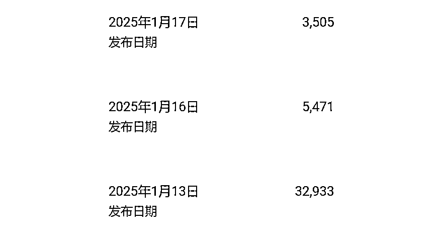
我的长视频账号截图（3条视频将近3000小时播放，达到初级YPP门槛）
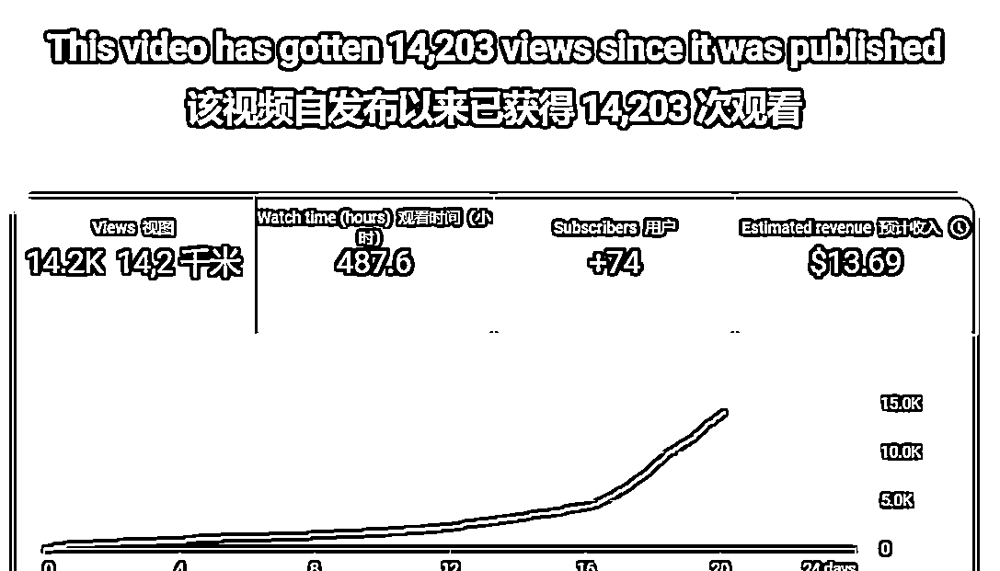
借用一位深海圈圈友的长视频收益截图，万播10-15刀
AI时代，用AI提效完成个人加速度，让普通人创作更容易，拥有更多可能性；
不要和趋势对抗，主动拥抱趋势，去适应去改变去利用趋势；
AI 让内容创作变得更容易，作为工具这就是它的核心价值；同时也要提醒自己不要本末倒置，迷失在 AI 里；作为初入局者，我们可能会创作出AI垃圾，要对自己说没关系；只要我们持续入局，深耕，一定可以做的越来越好。
为什么选择名人解说/故事赛道？
如果你是一个优秀的内容博主，那么看完本篇可以利用AI工具提效，解放自己的创作时间。
如果你是一个没有任何内容创作经验的普通人，那么看完本篇可以利用AI工具完成你的第一次内容创作。
账号注册于2024年11月，共发了15个长视频，1790个订阅，38万播放，已开通YPP
综合来看，找到对标账号，加以模仿，蹭风口上的名人热度做长视频，是油管掘金的一条好路子
www.youtube.com/@SoulStation-peace
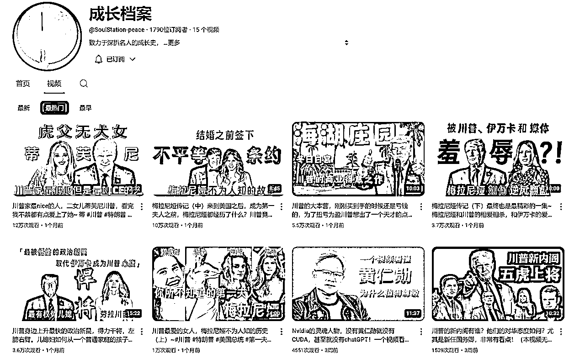
频道注册于2021年4月，共发了1153个视频，目前将近8w订阅
视频内容主要是名人故事讲解，发出去短短几天就可以有很高的播放量
www.youtube.com/@談笑娛生
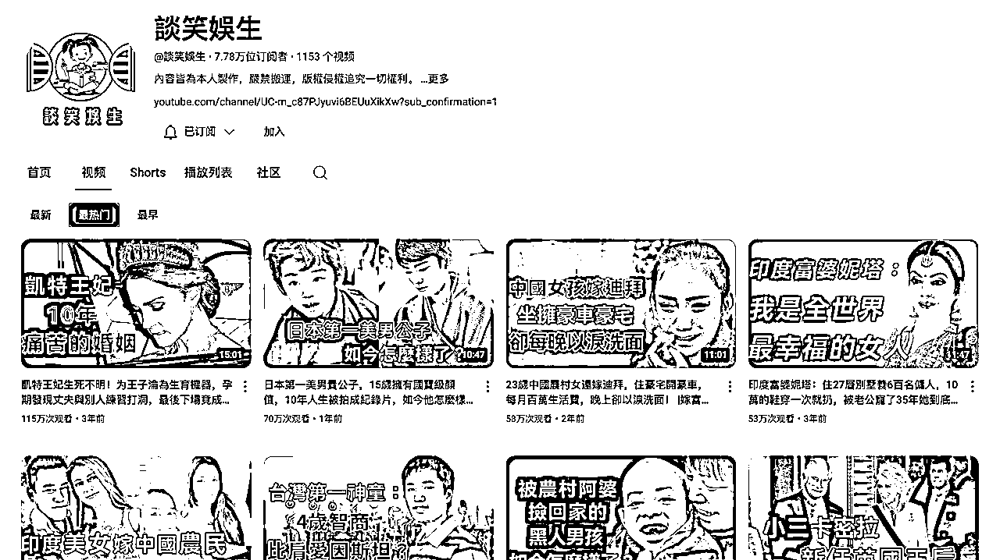
操作方法 ：在浏览器中打开油管视频下载工具，复制好对标视频的网址，输入到对话框中，点击开始
需要注意的是，这个工具在下载视频/音频/图片的时候，需要点击两次才有反应
点击两次【音频】之后我们就可以把对标账号的音频下载下来进行使用
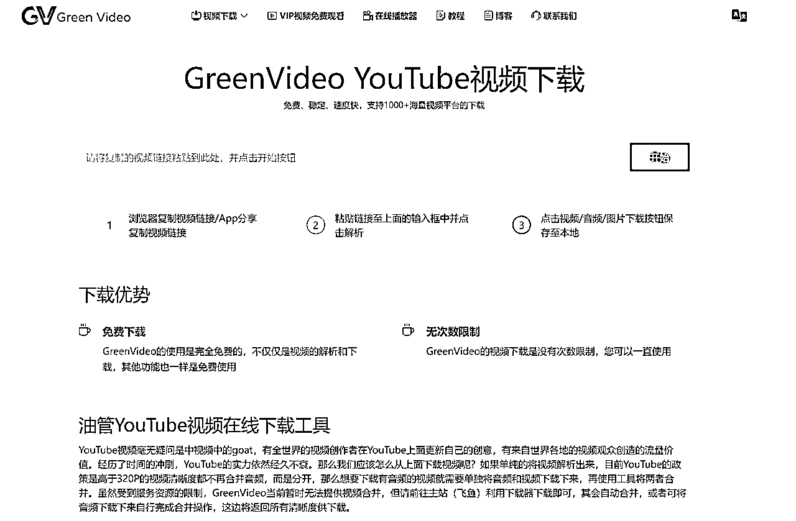
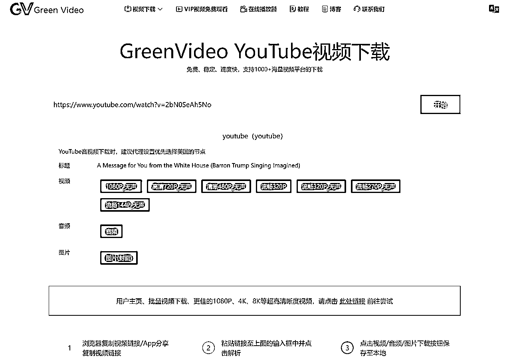
点击右上角的【上传】，然后选择我们上一步扒下来的音频，之后点击提交
然后点击右上角的三个点，选择【导出文字记录】，就可以得到对标视频的文案了，接下来，我们对应视频的文案喂给Chatgpt,让人工智能帮我们提炼内容即可
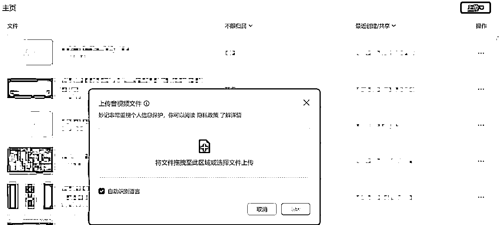
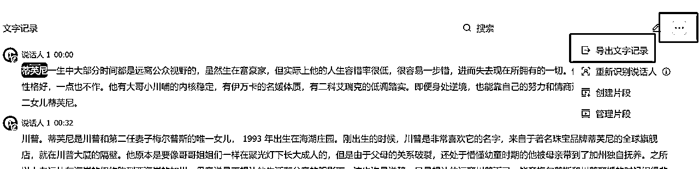
看一遍对标视频的文案，总结和筛选出文章整体的框架，然后把限定条件给gpt，就可以让他开始干活了，举个例子：
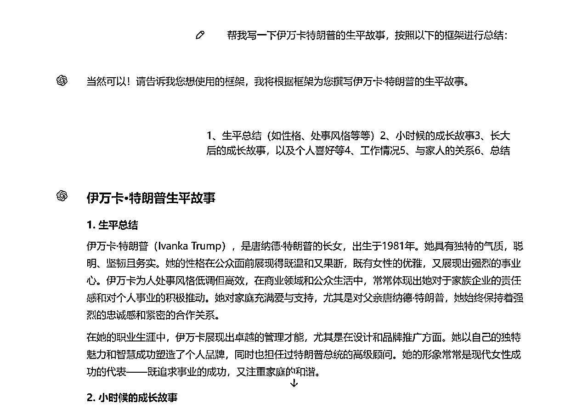
按照方法一，先让AI列举文章框架，经过新增删减框架，最后让AI完善文章内容。
如果输出的文案我们有什么不满意的地方，让GPT对应修改即可。
温馨提醒：10分钟左右的长视频，需要3000字左右的文案；可以让AI限定输出3000字以内的文案。
通过上一步我们已经搞定了视频文案，接下来我们需要搞定配音了；如果自己录音，首先比较费时间，且剪辑困难，语音语调的一致性、气口长短的问题都比较容易影响最终的输出效果，所以我们直接考虑AI配音/AI克隆自己的声音，我们用到的工具是海外版海螺（需要科学上网才能打开链接）：https://www.hailuo.ai/audio
这个工具可以解决的问题是，克隆我们的声音，然后喂给它新的文案，它就可以照着新文案进行音频输出，当然了，如果有的同学觉得不太愿意使用自己的克隆声音，也可以直接使用它内置的AI声音进行音频输出，我们来看两种方法分别的使用步骤：
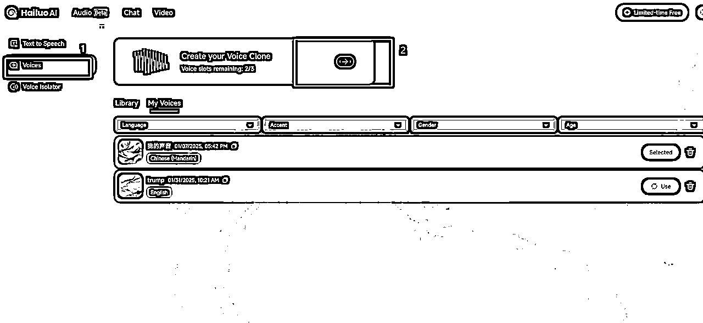
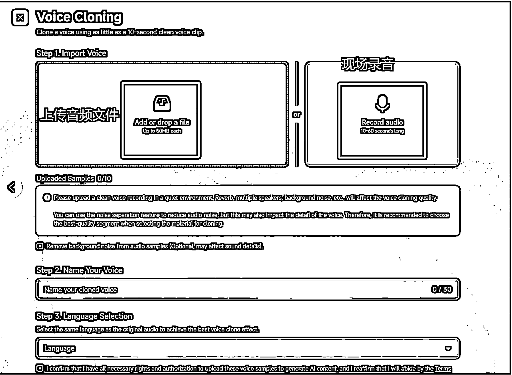
点击框1的位置，在框2的位置把制作好的文案放进来，这个地方有个技巧，在放文案的时候最好不要一次性把所有文案放进来，因为AI在处理长文本的时候会有吞字的现象（每一句结尾两个字没声音），通过刷新页面，然后再重新生成有可能会好，所以我的方法是分段生成，最后在剪映里面拼起来，效果挺好。
在框3位置可以找到我们刚刚克隆好的声音，选择框3中图最右的切换按钮，可以切换到声音选择界面，再点击【我的声音】即可选择我们制作好的声音
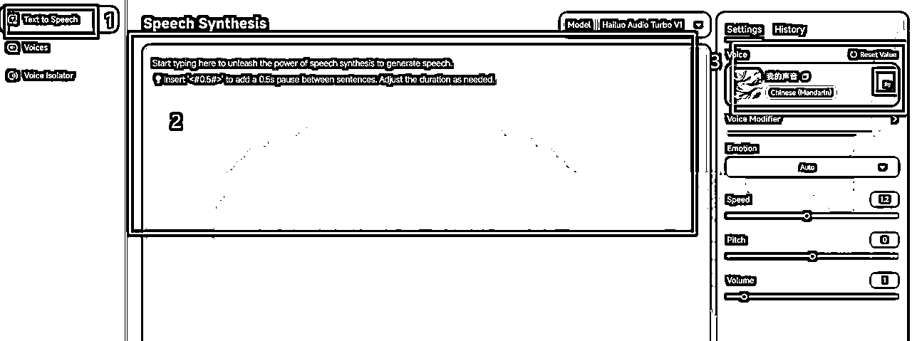
其他设置项：Emotion我一般选择默认项或者happy，大家可以自行探索，Speed选择1.2左右比较合适，其他数值不是太快就是太慢，其他设置项都保持默认
如图所示，这两笔点击之后，我们进入了海螺系统内置的声音库，这里有不同年龄X性别的声音组合可以选，大家可以根据自己的喜好进行选择使用，点击【Use】按钮即可
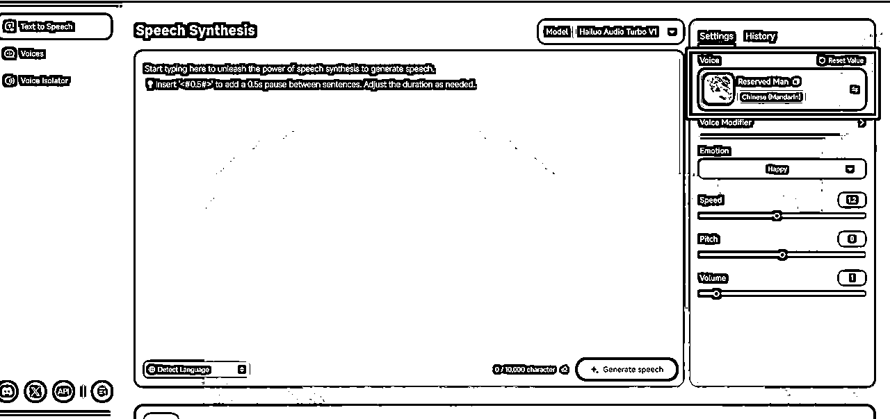
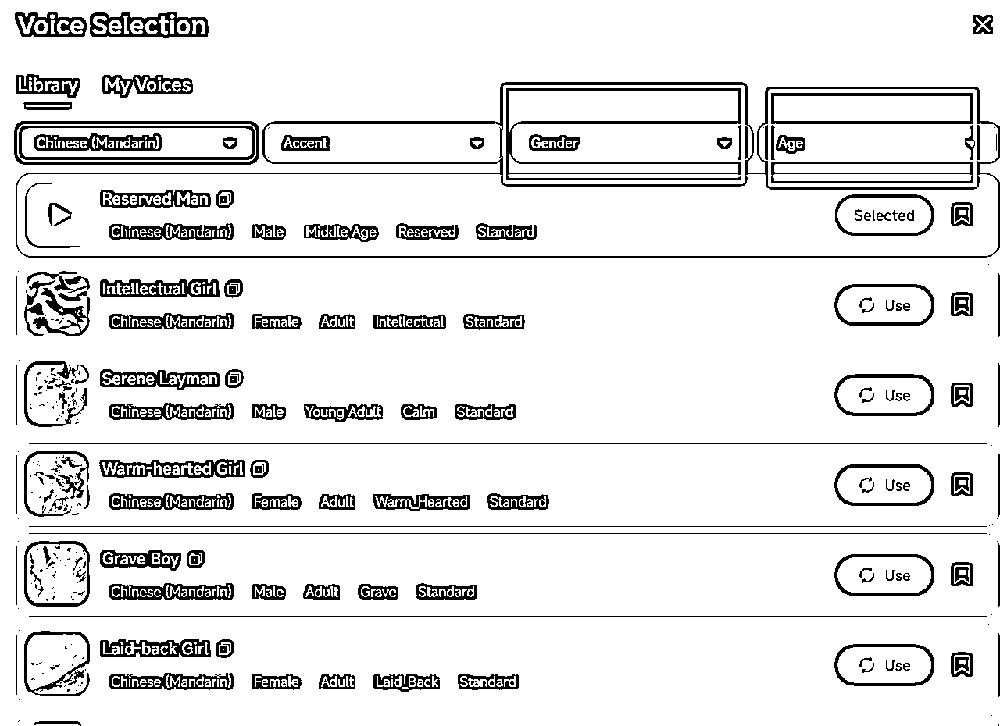
通过之前的步骤我们已经得到了我们制作视频所需要的文案和音频文件，为什么在视频素材和图片素材都没有的情况下就要开始剪辑了呢，因为我通过多次视频制作测试出来这个流程是综合比较节省时间的，这一步我们相当于是校准字幕+校准音频，还可以熟悉一下文案，构思一个画面感，后面找素材的时候更加有的放矢
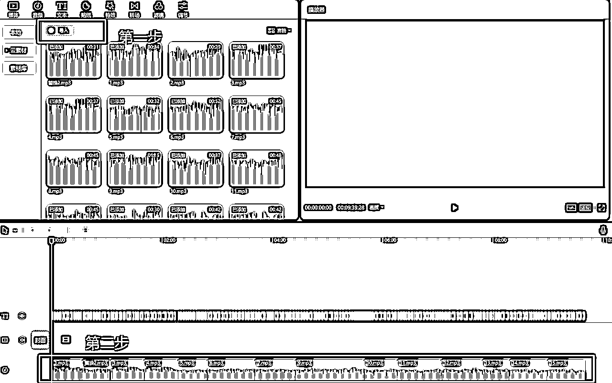
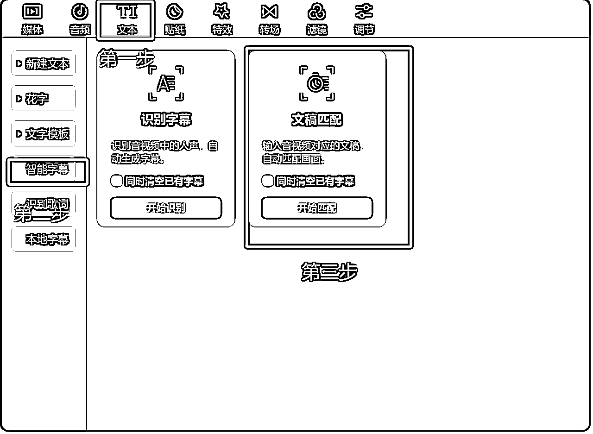
如下图所示，把我们已经生成的文案按照步骤输入之后，剪映会自动为我们的视频匹配出文案，接下来就是我们的重点：
听一遍只有【字幕+音轨】的“视频”，看一下字幕和音频是否都能对上，也听一下音频是否都准确，有没有吞字或者滑音出现特别跳跃的情况
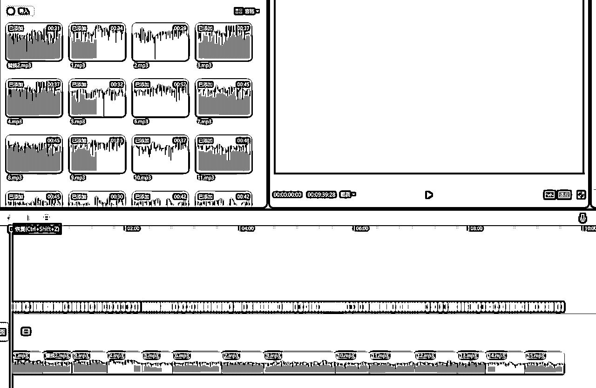
素材准备的过程我一般分成两步，第一步，在开始做文案之前，就先在上面三个平台上搜索一下主题人物，把搜索出来的高清图片进行下载，这一步属于是广撒网，为了沉浸式下载图片素材，我们需要用到【亨亨猫】的批量下载功能，找到一个链接，就丢给亨亨猫，过一会儿一起批量下载
第一步点搜索，并输入我们的主题人物名字
第二步，在搜索出的界面我们可以看到有很多图片，在我们中意的图片处右键选择【在新标签页打开链接】，然后我们可以得到类似如下的界面，复制新打开的网址链接
第三步，把刚才复制的网址粘贴到亨亨猫中，依下图中标记的数字顺序点击，即可完成素材的下载（注意，在我们实操的时候，我们是找好很多网址给亨亨猫进行批量导出，找一次导一次费时费力，大可不必哈）
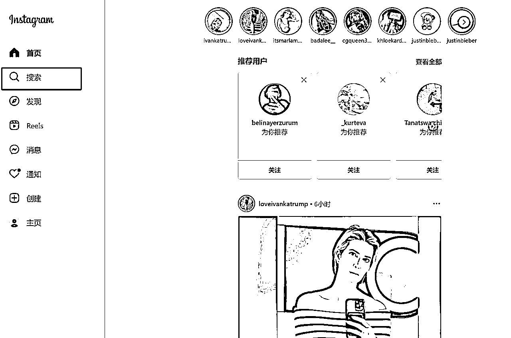
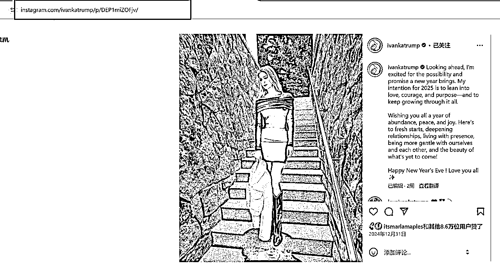
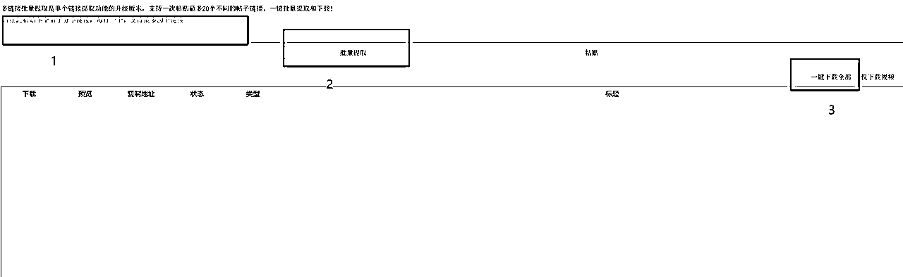
接下来是在剪辑的过程中细化定向补充图片/视频素材，其实通过上一步的素材搜集，我们可以完成70-80%的作品输出，剩下有20%左右的文案，在我们搜集的材料里面可能没有合适对应的素材，我举个例子，比如我们有一句文案是【伊万卡从大学毕业】，这时候我们做的视频显示的界面最好是伊万卡穿着学士服或者类似的场景，但是我们已经找好的素材库里面并没有，那这时候为了视频有更好的展示效果，那我们就应该重新去找素材，找素材的地方就是我上面提到的几个地方，下载工具依旧用亨亨猫即可，这一步收集素材属于查漏补缺
这一步我们可以做做功课，复习一下老马教练的航海手册文档或者航海直播，基本上老马教练的这两个剪辑教材就够用了，然后把搜集好的图片素材和视频素材导入剪映，就可以开始操作啦
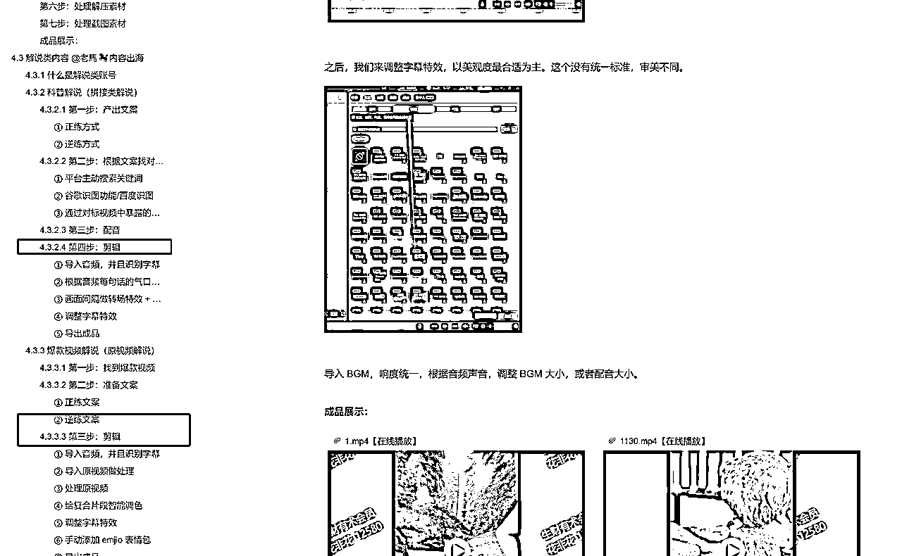
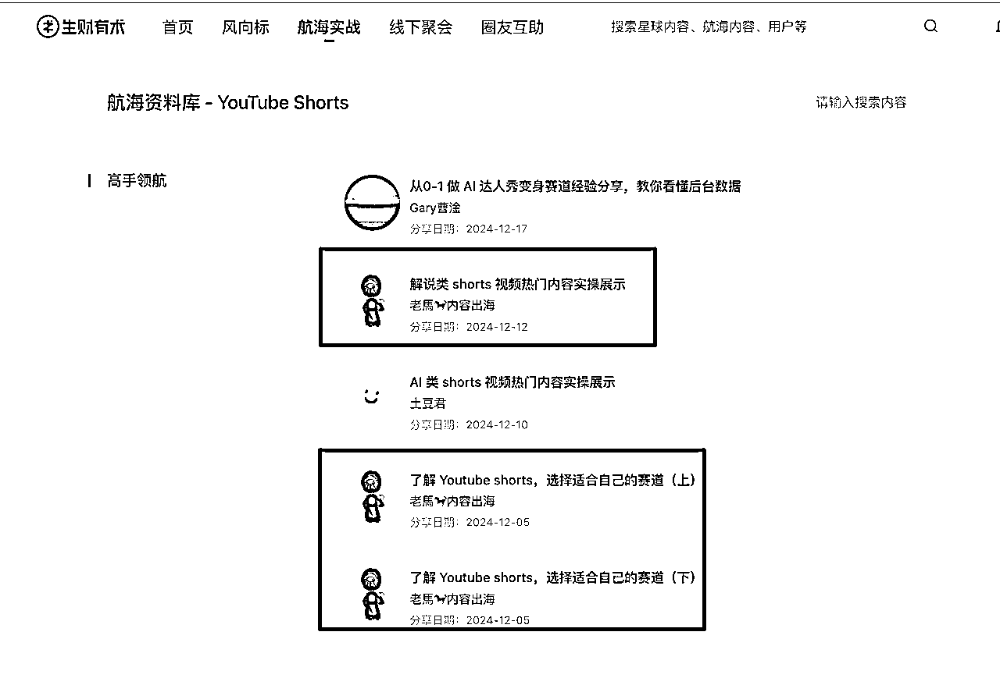
https://scys.com/view/docx/CkoidgbmBoL4LkxehYsckPwlnUd
https://scys.com/activity/documents?id=4660&index=1
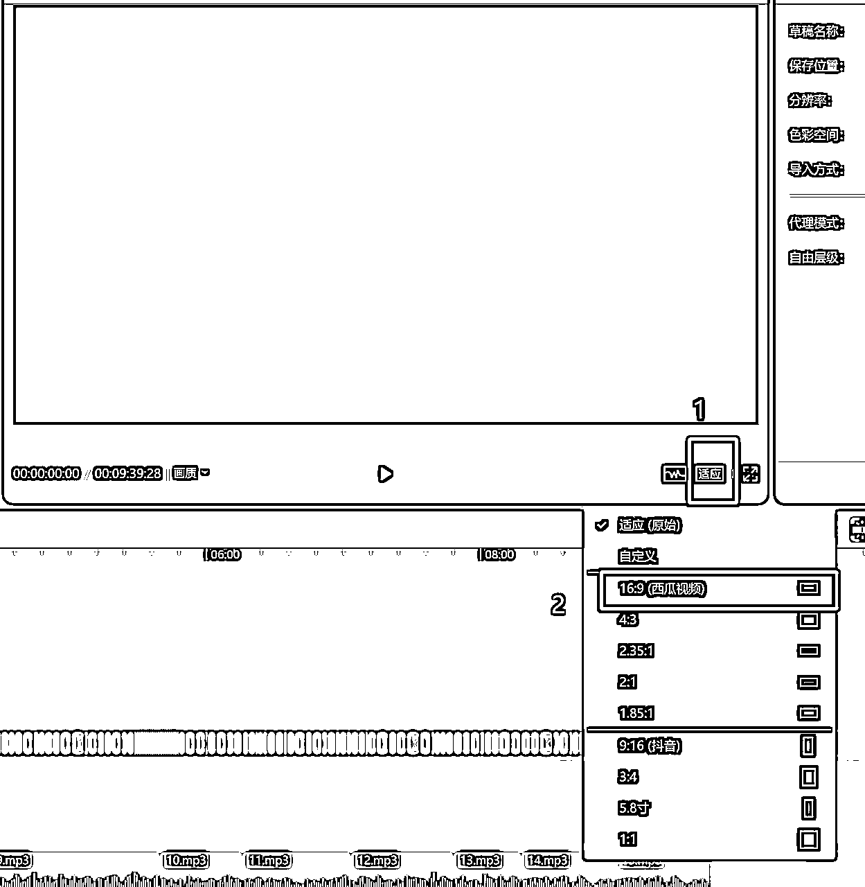
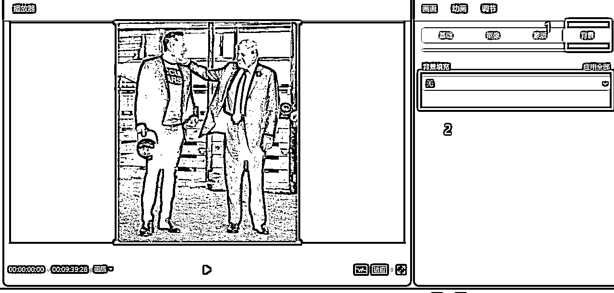
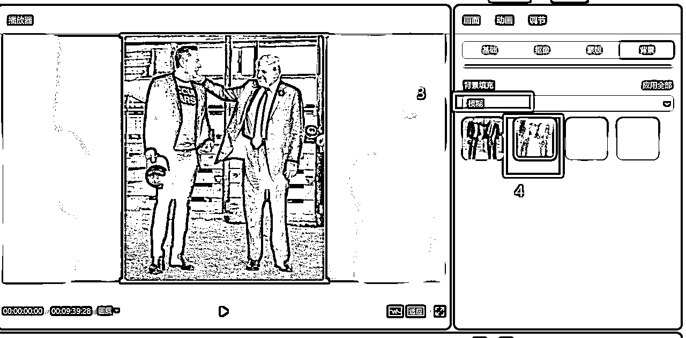
关键帧主要是在图片的开头和结尾进行添加，添加后让图片有动起来的效果，把光标拖到图片开头位置，点击下图右上角的框2位置菱形，即可添加开头的关键帧，同理，拖到图片素材末尾，同样位置即可添加末尾的关键帧，需要注意的是，在末尾处要修改一下缩放数值，把数值改成125%（这个数是我测试下来效果比较好的）
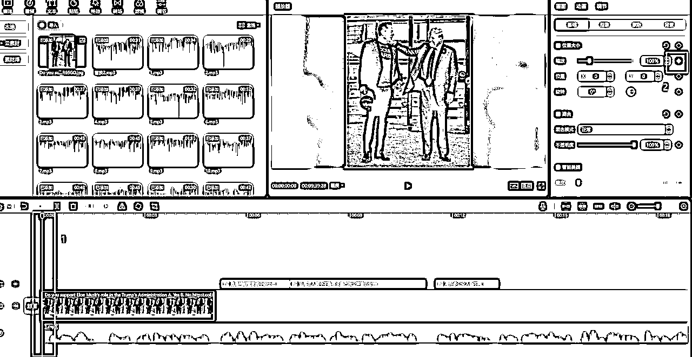
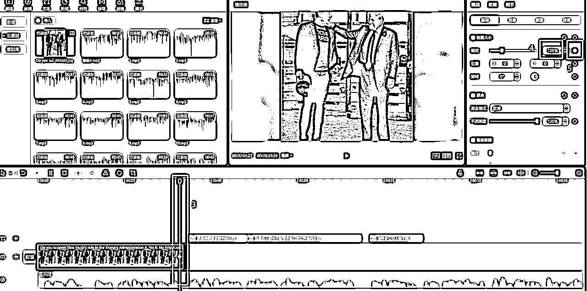
添加背景音乐，给素人讲解视频增添光彩，让听觉效果更佳；不管长短视频，音乐都非常重要。
suno:https://suno.com/（需某宝买账号）
需要注意的点：一定要把框2勾选上，这样创作出来的是纯音乐，导入到视频中不会喧宾夺主，我们在框3的位置简单给一句描述，例如【想为伊万卡特朗普跌宕起伏的一生创作一支舒缓安静的音乐】，它就会自动生成，每次会生成两支音乐供选择，我一般的做法是，在它生成完后，增加或修改几个提示词，再生成几支，最后一共挑出来3支组合进视频里，大家也可以自行探索
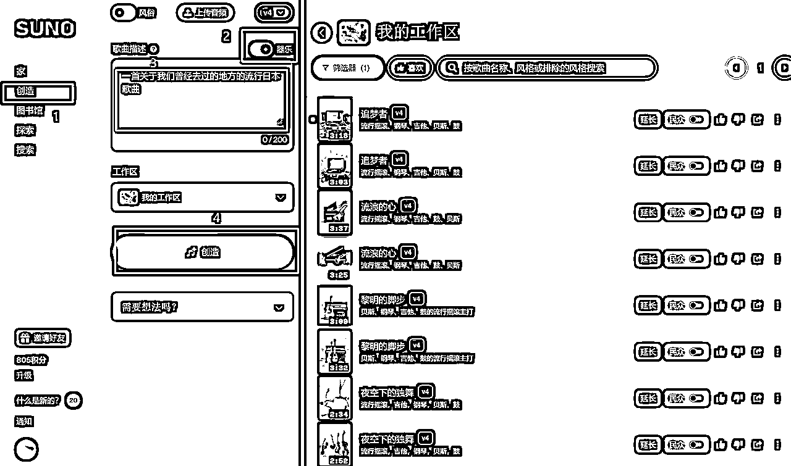
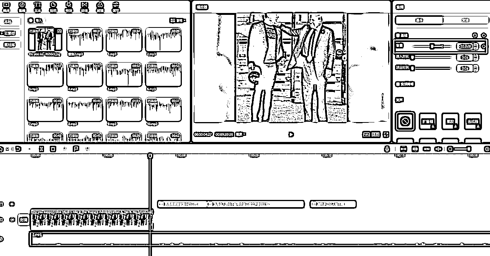
随后把生成好的音频导入到剪映中，把背景乐声音大小设置在-20左右，是比较好的一个数值，不会太吵也不会听不见
短视频标题我们不会太过于研究，因为在YouTube生态长短视频推荐机制不同，给用户展现的场景不同；
长视频标题和封面占比高，头部YouTube博主都会做标题和封面AB测试，找到点击率最好的标题和封面（可以仔细观察下自己关注的YouTube博主有没有这个动作喔）
AI爆款标题和我们写文案有点类似，我们把参考的爆款视频标题输入给GPT，和AI共创出爆款标题，需要注意的是，AI会根据参考进行扩散，我们需要进行甄别，以及最终挑选出来最合适的那个标题，因为到了这一步，我们的视频已经制作好了，我们对于自己的视频文案，以及视频内容都心中有数了，最后盖一个帽子，相对容易，如果一上来就定标题，反而容易纠结
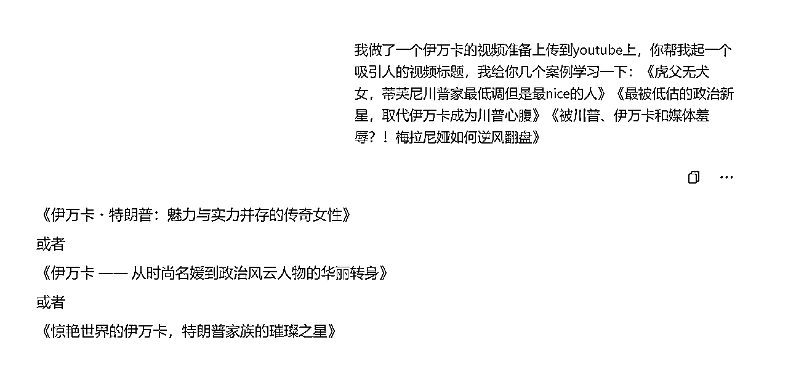
黄油相机（手机app)
在素材库中找出比较贴合主题的高清图片下载到手机上备用，并且也可以参考对标视频的封面图设计，心中有个大概的思路
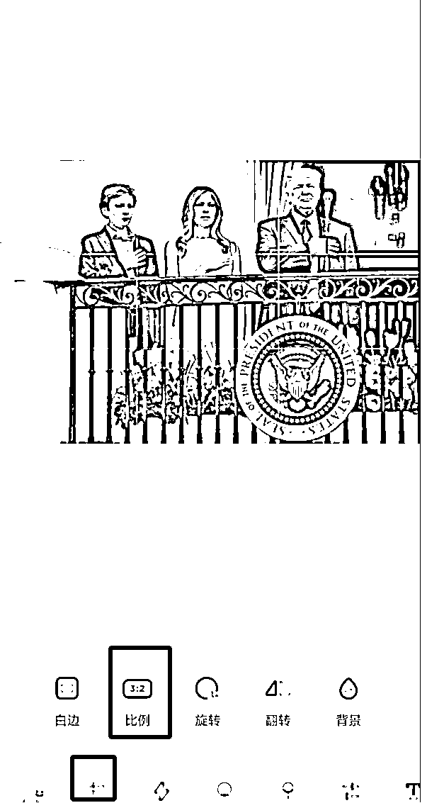
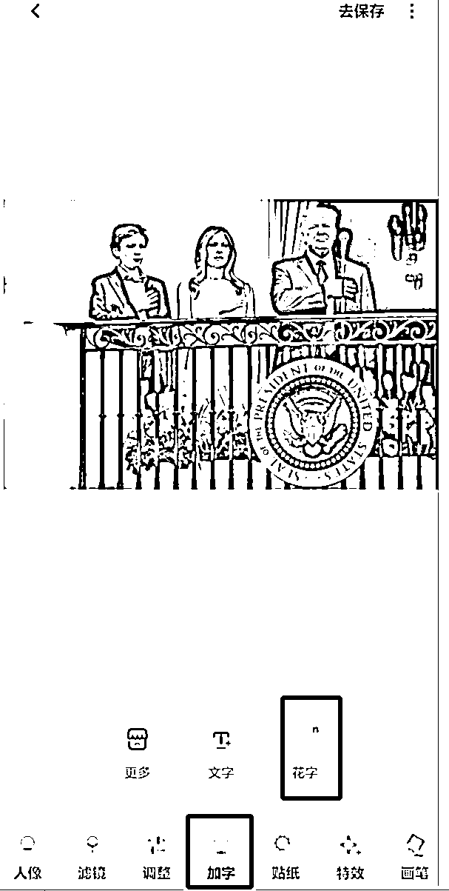
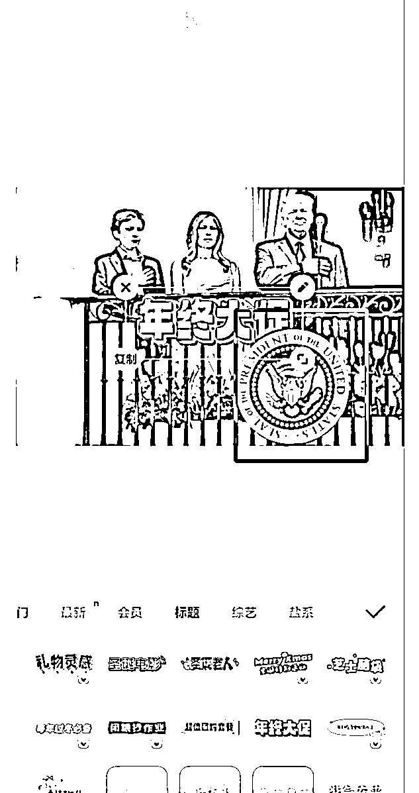
好玩的地方：长按我们上一步输入的花字，可以在出现的选项中有一个【遮挡】，点击选择后，来回拖动花字，我们发现这个效果是可以把字的一部分藏在图片中人物或什么东西的下面，给我们最终的效果多了一些层次感，大家可以探索一下
工具：美图秀秀（需付费）+黄油相机
操作步骤：
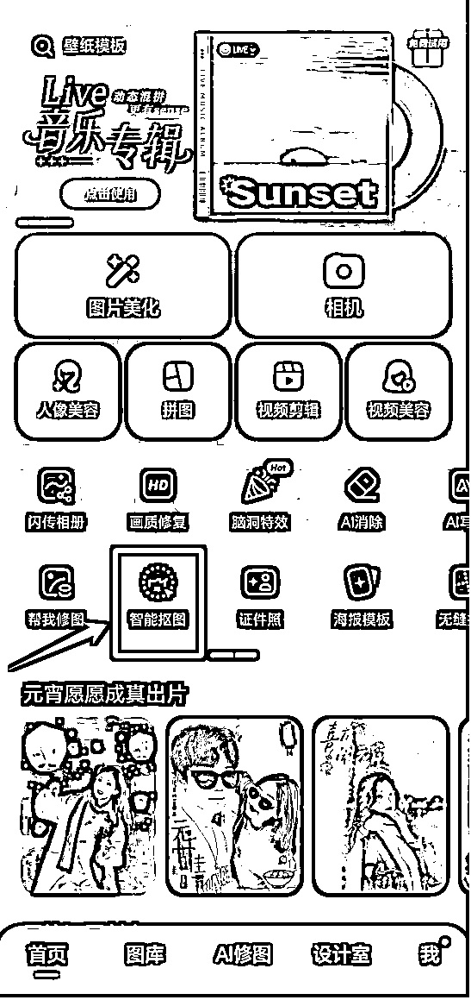
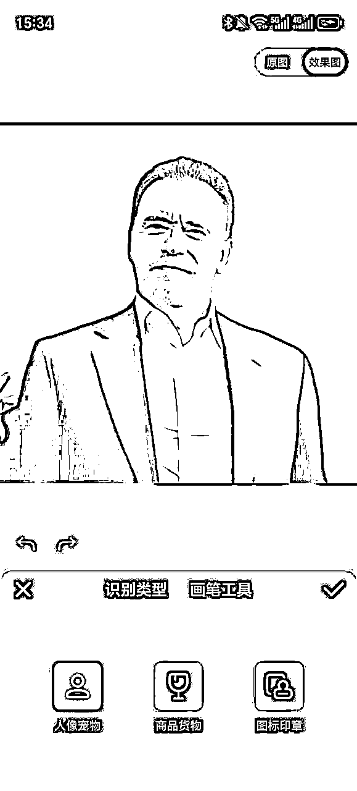
将抠出来的人物图保存到手机备用，如果有部分小细节没有扣好，可以用画笔工具进行微调，大家一试便知
点击【导入图片】-【空白画布】-【添加图片】（记得调整画布比例为16:9）
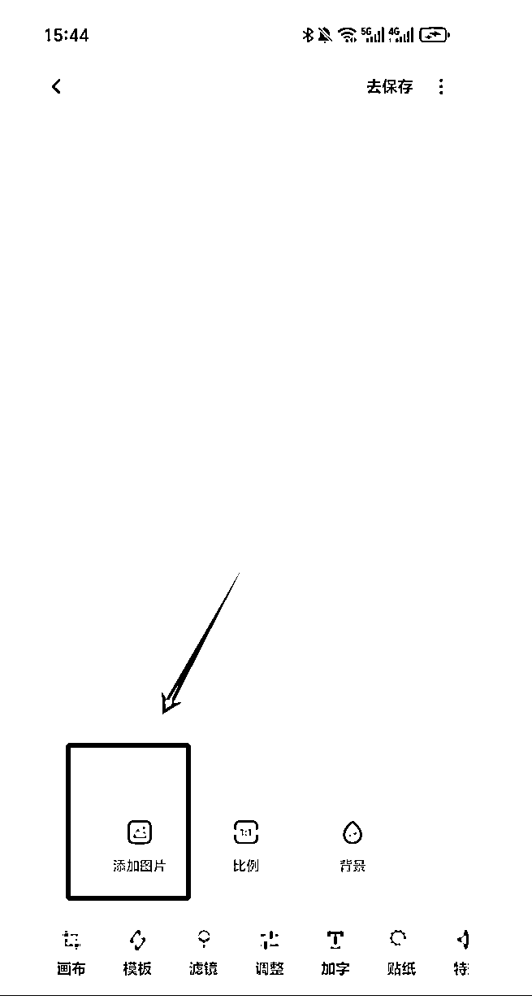
按照这个方法，就可以把扣好的人物图放进来了，如果要放的人物图大于两张该怎么办呢？
那就可以在黄油相机里通过导入贴纸的形式导入人物图：
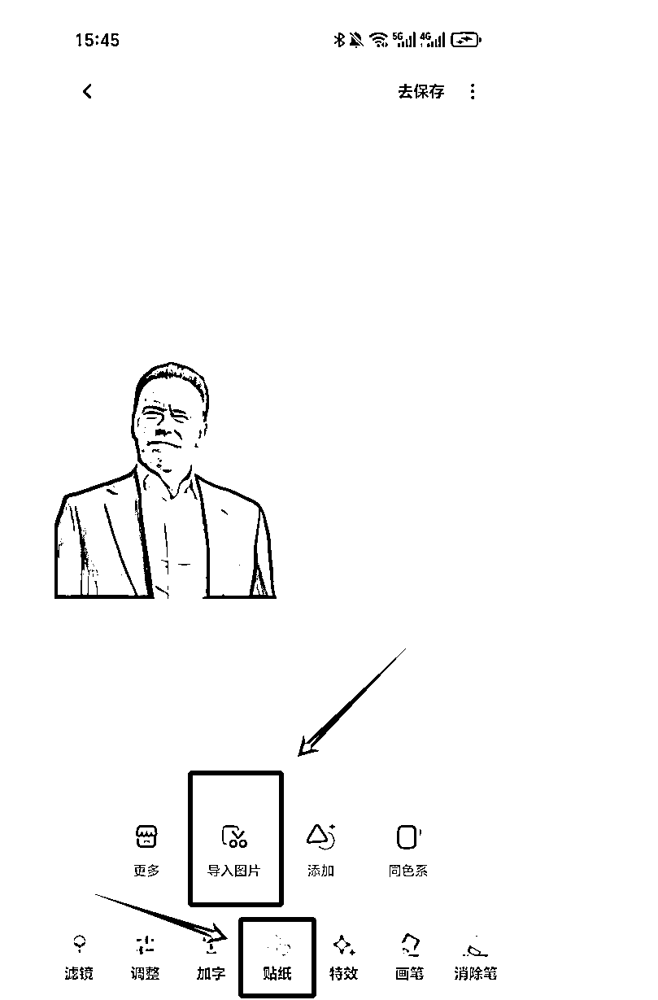
在人物图都导入完成后，调整一下相对位置，就可以开始增加标题花字了，加好对应的文字之后，我们的封面图就做好了
最后，类似的赛道有很多，大家可以依次拓展，能够用AI复刻的爆款赛道，对我们普通人本质上就是好赛道，祝大家都能好好利用AI工具提效，出海赚到更多美金💰。